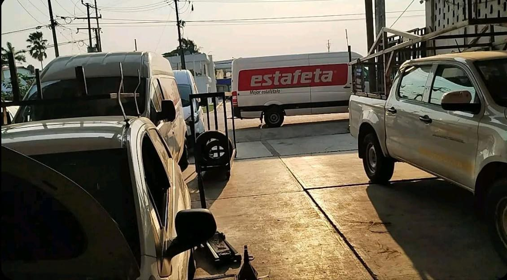

Ofrecemos mantenimiento, reparación y optimización de autos, motocicletas y camionetas ligeras. Realizamos revisiones preventivas, reparaciones completas de motores, sistemas eléctricos, frenos, suspensión y ajustes para mejorar el rendimiento de cada vehículo.

Ventaja competitiva: Contamos con experiencia especializada, trato personalizado, tecnología moderna, precios transparentes y tiempos de trabajo comprometidos.
Valores: Calidad, Honestidad y Pasión por lo que hacemos.
Percepción deseada: Ser reconocidos como un servicio confiable, especializado y apasionado por el cuidado de los vehículos.
Mensaje: Profesionalismo y dedicación al detalle, conectando con el verdadero "arte de los motores".
Nuestro servicio está dirigido a:
En la zona contamos con referencias locales como: Taller de Medina (Gabino Barrera), El Taller del Güero en Novara y el taller mecánico "Los Migueles". Nos diferenciamos por la atención personalizada y la calidad garantizada en cada reparación.
El costo aproximado por servicios generales de mantenimiento y reparación básica es de $2,000 MXN, pudiendo variar según el tipo de trabajo, refacciones y tiempo requerido.
A 5 años: Ser la referencia principal en San Antonio Texas y zonas aledañas de Veracruz; abrir una sucursal adicional, ofrecer servicio a domicilio y contar con certificaciones oficiales de marcas.
A 10 años: Lograr expansión regional en todo Veracruz, contar con un centro de capacitación técnica, ofrecer servicios de optimización con tecnología de vanguardia y tener nuestra propia tienda de refacciones.
📍 Dirección: San Antonio Texas, Veracruz. Calle 16 de Septiembre
📞 Teléfono: +52 288 885 5119
✉️ Correo electrónico:
hernandezantoscaleb0@gmail.com
⏰ Horario de atención:
Lunes a Viernes de 7:00 AM a 8:00 PM